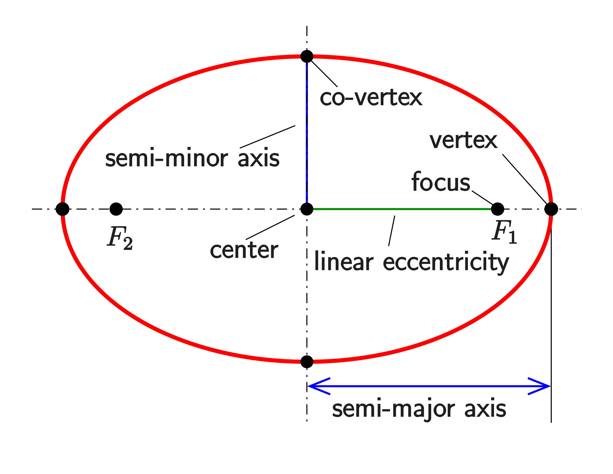

2 Celestial Mechanics
Chapter 2 walks through the historical contributions of Kepler’s Laws, Galileo’s scientific confirmation of heliocentrism, and Newton’s contributions to physics which successfully connected Galileo (and others’) astronomical observations with gravity. Caroll and Ostlie introduce work and energy, and derive Kepler’s Laws before proving the virial theorem: that the total energy of a gravitationally bound systems is equivalent to “one-half of the time-averaged potential energy” [1].
2.1 Kepler’s Laws
The following laws — Kepler’s Laws — are quoted directly from Caroll and Ostlie [1]. Each are derived later in Chapter 2.
- A planet orbits the Sun in an ellipse, with the Sun at one focus1 of the ellipse.
- A line connecting a planet to the Sun sweeps out equal areas in equal time intervols.
- The Harmonic Law: \(P^2 = a^3\).
Kepler’s definitions place the paths of all orbits on conic sections: cross-sections of a cone. While circular, elliptical, parabolic, and hyperbolic paths are all conic sections, ach of the planets Kepler identified in the solar system have elliptical orbits. For this reason, a substantial section of Chapter 2 reviews the geometry of ellipses.
An ellipse has two focal points, with semimajor axis \(a\) defined as one-half the length of the diameter — the line which passes through both focal points — of the ellipse. The central body — in our case, the Sun — is located at one of the two focal points; that point is principle focus [1]. The distance from the principle focus to an orbiting object is referred to in Equation 2.1 as \(r\), and the distance from the other focus is referred to as \(r'\). The semiminor axis \(b\) is perpendicular to, and bisects, the semimajor axis. The eccentricity \(e\) is the distance between both focal points divided by the major axis \(2a\) [1]. The label perihelion on the ellipse, and on the major axis, which is closes to the principle focus; the opposite point along the major axis is referred to as aphelion. The suffix helion refers to our Sun. More general terms are periapsis and apoapsis.

The following equations hold for ellipses. All are pulled from Chapter 2 of the text [1].
\[ r + r' = 2a \tag{2.1}\]
\[ b^2 = a^2 (1 - e^2) \tag{2.2}\]
Polar coordinates are convenient when describing conic orbits. The angle \(\theta\) is the true anamoly, and represents the orbiting object’s angular position past perihelion. The distance from the principle focus \(r\) is related to true anamoly; the precise relationship relies on the type of conic orbit. For elliptical orbits, Equation 2.3 relates \(r\) and \(\theta\); note that circular orbits are simply a special case where eccentricity \(e\) is zero. Equation 2.4 relates \(r\) and \(\theta\) for parabolic orbits, with \(p\) defined as the distance from the single parabolic focus to perihelion. Finally, for hyperbolic orbits, equation Equation 2.5 relates \(r\) and \(\theta\). An object on a parabolic orbit will be at rest when infinitely far from the central gravitational body. A hyperbolic orbit would keep the object’s speed positive while it travels away from the central gravitational body. An object with a velocity equal to to the central body’s escape velocity \(v_{\text{esc}}\) would follow a parabolic orbit. An object follows a hyperbolic orbit if its velocity exceeds the central body’s excape velocity.
\[ \begin{array}{cc} r = \frac{a(1-e^2)}{1 + e\cos\theta} & (0 \leq e < 1) \end{array} \tag{2.3}\]
\[ \begin{array}{cc} r = \frac{2p}{1 + \cos\theta} & (e = 1) \end{array} \tag{2.4}\]
\[ \begin{array}{cc} r = \frac{a(e^2-1)}{1 + e\cos\theta} & (e > 1) \end{array} \tag{2.5}\]
\[ v_{\text{esc}} = \sqrt{2 G M / r} \tag{2.6}\]
2.2 Newton’s Laws
Each of Newton’s Laws below are directly quoted from Caroll and Ostlie [1].
- The Law of Inertia. An object at rest will remain at rest and an object in motion will remain in motion in a straight line at a constant speed unless acted upon by an external force.
- The net force (the sum of all forces) acting on an object is proportional to the object’s mass and its resultant acceleration.
- For every action there is an equal and opposite reaction2
These laws, which are taught in high school physics classes, revolutionized physics. Newton’s Law of Universal Gravitation, shown in Equation 2.7, succesfully linked the motions of our solar system’s bodies to gravitation. Caroll and Ostlie also prove that the gravitational force due to a spherical shell3 is equivalent to the gravitational force due to the shell’s point of center of mass [1].
\[ F = G \frac{M m}{r^2} \tag{2.7}\]
2.3 Work and Energy
The expression for gravitational potential energy \(U\) is shown in Equation 2.8, and gravitational kinetic energy \(K\) is shown in Equation 2.9.
\[ U = -G \frac{M m}{r} \tag{2.8}\]
\[ K = \frac{1}{2} m v^2 \tag{2.9}\]
2.4 Gravitational Constraints
The center of mass of a gravitationally bound system is constant. This produces a useful simplification in the two-body case: the dynamics can be simplified to a reduced mass \(\mu\) with position \(\mathbb{r}\) orbiting the center of mass of the original system with total mass \(M\). The equations below are pulled directly from equations 2.22, 2.23, and 2.24 in the text [1].
\[ \mu \equiv \frac{m_1 m_2}{m_1 + m_2} \tag{2.10}\]
\[ \begin{aligned} r_1 &= -\frac{\mu}{m_1} \mathbf{r} \\ r_2 &= -\frac{\mu}{m_2} \mathbf{r} \end{aligned} \]
In this reduced case of the binary system, the total angular momentum \(L\) can be found using Equation 2.11.
\[ \mathbf{L} = \mu \mathbf{r} \times \mathbf{v} = \mathbf{r} \times \mathbf{p} \tag{2.11}\]
The derivations of Kepler’s Laws in Chapter 2 culminate in more general forms of the laws’ previous mathematical expressions. The following equations, pulled from the text, are valid for binary orbits [1]. Equation 2.14 and Equation 2.15 represents the velocity and orbital period of the reduced mass \(\mu\), respectively.
\[ \frac{d A}{d t} = \frac{1}{2} \frac{L}{\mu} \tag{2.12}\]
\[ E = -G \frac{M \mu}{2 a} = -G \frac{m_1 m_2}{2 a} \tag{2.13}\]
\[ v^2 = G \left(m_1 + m_2\right) \left(\frac{2}{r} - \frac{1}{a}\right) \tag{2.14}\]
\[ P^2 = \frac{r \pi^2}{G \left(m_1 + m_2\right)} \tag{2.15}\]
2.5 The Virial Theorem
For another day!
As Caroll and Ostlie explain later in Chapter 2, objects in our solar system actually orbit the solar system barycenter, which is located just outside the surface of the sun.↩︎
This law is clear when considering forces as vectors. “Mathematically, the third law can be represented as… \(F_{12} = -F_{21}\)” [1].↩︎
Qualitatively, the word shell feels unimportant to me. The proof presented by Caroll and Ostlie is specific to a spherical shell, but I suspect that proof can be extended to all spheres; after integrating over cross-sectional rings on each shell, integrate the force due to each infinitesimally thin shell. I should try to work this out!↩︎